Input의 입력 값의 유효성 검사 방법들의 예제입니다. 크게 두 가지 방법으로 Input의 이벤트를 이용한 방법과 속성에 사용자 정의 함수를 선언하는 방법입니다. 사용할 이벤트와 속성은 아래와 같습니다. 이벤트: oneditenter, onviewchange, onchange, onblur 속성: validator, displayformatter 추가적으로 가장 많이 사용되는 세 가지인 onblur, onviewchange, validator의 실행 순서를 확인할 수 있는 예제를 포함하고 있습니다.
oneditenter 사용하기
onviewchange 사용하기
displayFormatter 사용하기
onblur 사용하기
validator 사용하기
실행 순서 확인하기
이 예제는 예제 화면의 영역 [로그 확인]의 textarea에 참고용 로그를 출력하고 있습니다.
그림 1.로그 출력 영역 참고 이미지
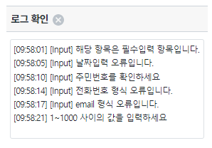
텍스트는 날짜 형식과 날짜 형식이 아닌 텍스트를 각각 입력해 테스트합니다.
(ex. 20230201 -> O , 99999999 -> X)
"ENTER" 키, "TAB"키, 빈 영역 클릭 등의 방법으로 Input에서 포커스가 벗어나게 해줍니다.
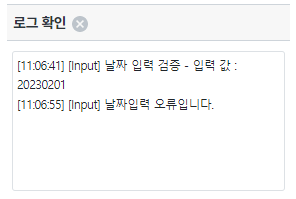
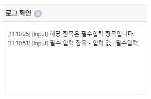
텍스트는 주민등록 번호 형식(ex. 6407131018433)과 주민등록 번호 형식이 아닌 텍스트를 각각 입력해 테스트합니다.
(ex. 6407131018433-> O , 99999999 -> X)
"ENTER" 키, "TAB"키, 빈 영역 클릭 등의 방법으로 Input에서 포커스가 벗어나게 해줍니다.
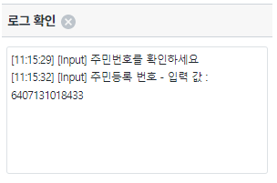
"ENTER" 키, "TAB"키, 빈 영역 클릭 등의 방법으로 Input에서 포커스가 벗어나게 해줍니다.
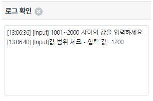
텍스트는 전화 번호 형식(ex. 01012345678)과 전화 번호 형식이 아닌 텍스트를 각각 입력해 테스트합니다.
(ex. 050512345678, 01012345678, 021234567 -> O)
"ENTER" 키, "TAB"키, 빈 영역 클릭 등의 방법으로 Input에서 포커스가 벗어나게 해줍니다.
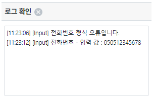
텍스트는 이메일 형식과 이메일 주소 형식이 아닌 텍스트를 각각 입력해 테스트합니다.
(ex. abcd@inswave.com -> O)
"ENTER" 키, "TAB"키, 빈 영역 클릭 등의 방법으로 Input에서 포커스가 벗어나게 해줍니다.
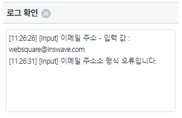
displayformatter와 validator 적용 각각 적용된 Input 모두 동일하게 테스트합니다.
onblur는 포커스를 잃었을 때, onviewchange, displayformatter, validator는 값이 변경된 상태에서 포커스를 잃을 때, oneditenter는 "ENTER"키나 "TAB"키를 눌렀을 경우 발생합니다.
전체를 다 실행시키려면 "ENTER"키 혹은 "TAB"키를 눌러줍니다.
발생하는 순서에 주의하며 로그를 확인합니다.
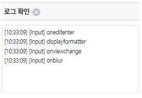
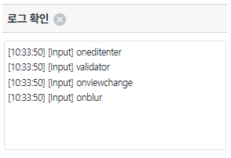
oneditenter - 영역 [필수 입력 항목]
onviewchange - 영역 [날짜 입력]
onchange - 영역 [필수 주민등록 번호]
onblur - 영역 [필수 값 범위 체크]
사용 할 이벤트에 따라 onblur, oneditenter, onviewchange, onchange 이벤트 함수를 정의 합니다.
그림 2.웹스퀘어5 SP5 스튜디오의 Property View(이벤트 창) 예시
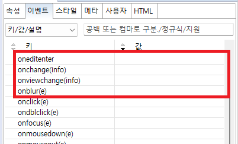
[필수] oneditenter = scwin.ibx1_oneditenter //oneditenter 이벤트가 발생할 때 실행할 함수를 지정합니다.
[필수] onviewchange(info)= scwin.ibx2_onviewchange //onviewchange 이벤트가 발생할 때 실행할 함수를 지정합니다.
[필수] onchange(info) = scwin.ibx3_onchange //onchange 이벤트가 발생할 때 실행할 함수를 지정합니다.
[필수] onblur(e) = scwin.ibx6_onblur //onblur 이벤트가 발생할 때 실행할 함수를 지정합니다.
[소스 코드 예시] - 영역 [필수 입력 항목]
/** * 영역[필수 입력 항목 검증] * 입력 [ibx1]의 oneditenter 이벤트 합수 */ scwin.ibx1_oneditenter = function () { var value = this.getValue(); var str_len = value.trim().length; var strLog = "[Input] 필수 입력 항목 - 입력 값 : " + value; if (str_len == 0) { //로그 출력 strLog = "[Input] 해당 항목은 필수입력 항목입니다."; } $c.frame.printExampleLog(strLog, txa_log, false); console.log(strLog); }
<xf:input ... ev:oneditenter="scwin.ibx1_oneditenter" ...> </xf:input>
그림 3.웹스퀘어5 SP5 스튜디오의 Property View(속성 창) 예시
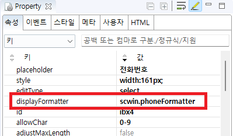
[필수] displayFormatter = scwin.phoneFormatter //input에서 입력이 완료되면 형식을 맞추기 위해 실행되는 함수
STEP2. 지정된 함수 내에 실행할 코드를 작성합니다.
[소스 코드 예시]
/** * 영역 [전화번호]의 * 입력 [ibx4]의 displayFormatter 함수 */ scwin.phoneFormatter = function (str) { var strLog = "[Input] 전화번호 - 입력 값 : " + str; var phoneNum = scwin.formatPhone(str); var isDash = (phoneNum.indexOf("-") > 1); if (!isDash) { //로그 출력 strLog = "[Input] 전화번호 형식 오류입니다."; phoneNum = ""; } $c.frame.printExampleLog(strLog, txa_log, false); console.log(strLog); return phoneNum; };
<xf:input ... displayFormatter="scwin.phoneFormatter" ...> </xf:input>
그림 4.웹스퀘어5 SP5 스튜디오의 Property View(속성 창) 예시
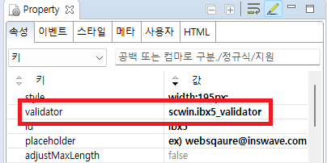
[필수] validator = scwin.ibx5_validator //onblur 이벤트이전에 실행할 validator 함수를 지정합니다.
STEP2. 지정된 함수 내에 실행할 코드를 작성합니다.
[소스 코드 예시]
/** * 영역 [이메일 주소]의 * 입력 [ibx5]의 validator 함수 */ scwin.ibx5_validator = function (info) { var value = info; var strLog = "[Input] 이메일 주소 - 입력 값 : " + value; var flag = scwin.isEmail(info); if (!flag) { //로그 출력 strLog = "[Input] 이메일 주소소 형식 오류입니다."; value = ""; } if (info.length != 0){ $c.frame.printExampleLog(strLog, txa_log, false); console.log(strLog); } return value; };
<xf:input ... validator="scwin.ibx5_validator" ...> </xf:input>
oneditenter
onviewchange
onchange
onblur
displayformatter
validator
[웹스퀘어5 SP5 개발 가이드] 입력 검증
링크 : https://docs1.inswave.com/sp5_user_guide#026c1a35de446a11
[웹스퀘어5 SP5 개발 가이드] displayFormatter
링크 : https://docs1.inswave.com/sp5_user_guide#11934977445489b7